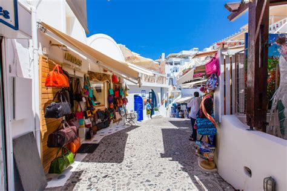
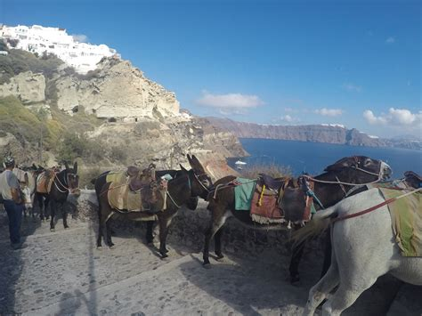
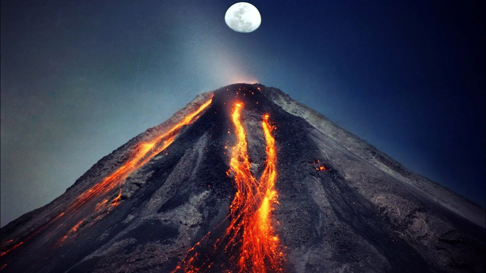
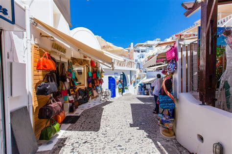
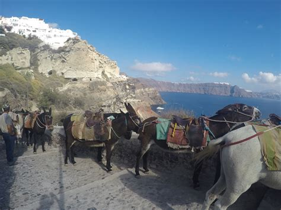
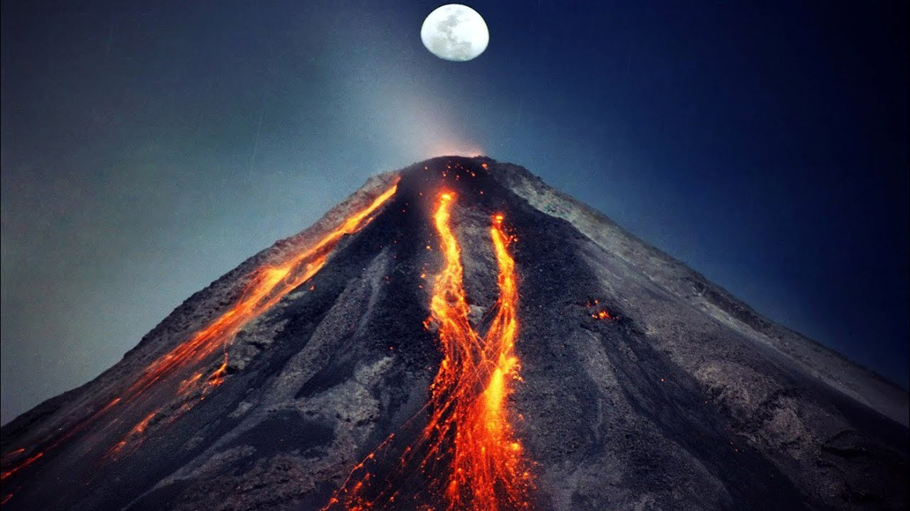

Bangladesh has four different areas of vegetation. The eastern zone,
consisting of parts of the Sylhet and Chittagong areas, has many low
hills covered with jungles of bamboo and rattan (a species of climbing
palm). The most common plant is a large type of bamboo that forms the
basis of the country’s paper industry. The central zone, covering
parts of the country to the north of Dhaka, contains many lakes and
supports swampy vegetation; the soil of part of this zone produces
the Madhupur jungles. The area lying to the northwest of the Jamuna
and to the southwest of the Padma forms a flat plain, the
vegetation of which consists mostly of cultivated plants and
orchards. Babul (Acacia arabica) is the most conspicuous tree.
The southern zone along the Bay of Bengal contains the vast
wetlands of the Sundarbans, with their distinctive mangrove
vegetation. Several of the mangrove species are commercially
valuable, including the sundari (Heritiera fomes or H. minor),
for which the Sundarbans are named, and the goran
(Ceriops roxburghiana). Also valuable are the gewa or gengwa
(Excoecaria agallocha) trees, which yield a softwood used for
making newsprint. Among the astounding variety of flowers are water
lilies (locally called shapla, the country’s national flower),
marigolds, tuberoses, and Chinese hibiscus. The bokul
(Mimusops elengi) is a common shrub that produces small red
berries.
Santorini is an island-phenomenon whose reputation precedes it. And
for good reason. On this legendary island in the Cyclades, all your
senses seem magnified, a product of its many contrasts: black earth
against whitewashed homes clinging to the cliff-side, or wild volcanic
sculptures against sleek Cycladic lines.
Also known as Thera in Greek, Santorini is an island immortalised by
poets and painters thanks to its celebrated light, multicoloured
cliffs and picture-perfect sunsets. If it’s always been your dream
to visit Santorini, here is just the start of what awaits you.

 




